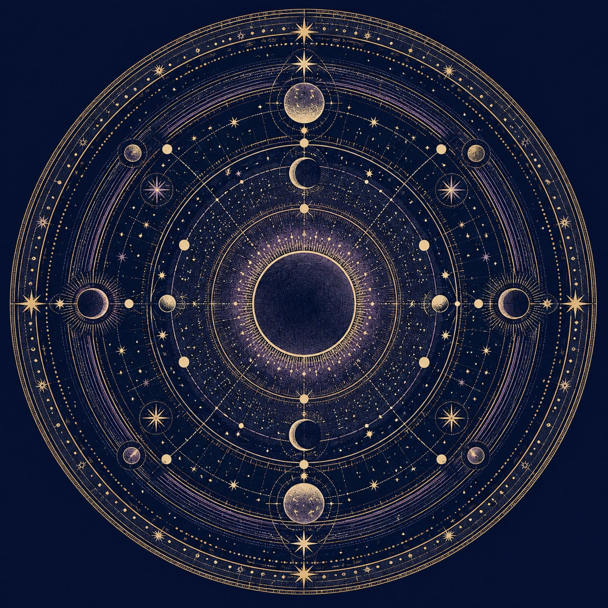

黄佩嘉的作品集 PORTFOLIO / 2026
把好奇，
存进文件夹。
从品牌、影像到产品与交互，
用不同的方式，把想法做出来。
从文件夹开始，也可以
PEIJIA'S PERSONAL COMPUTERCOLLECTION 01
从一个文件夹开始。单击打开 ↗
ph. 随时欢迎打开
每一个文件夹里，都有可以继续探索的作品。
25 件作品 · 6 个创作分类
也可以向下逛展02 / BRAND & SPACE
品牌与空间图鉴
四个品牌，四种日常。
停留在名字上，展开它的世界。
03 / IP 角色设计 · CHARACTER
每一种想象，
都有自己的轨道。
五位 IP 角色 · 继续滚动，遇见下一位同行者。

月灵兔滚动转动星盘 · 点击查看作品
04 / 影像放映室 · AI FILM
让想象，开始放映。
三支 AI 影像。
滚动切换片目，也可以直接点选。
05 / 产品与交互 · UI & SYSTEMS
把想法，交到手中。
界面设计与个人系统。
点选预览，看看想法如何成为日常工具。
06 / 字体与印刷 · TYPE & PRINT
让灵感，落在纸上。
字体实验与植物卡牌。
靠近一点，翻开它们。
07 / 小游戏 · VIBE CODING
给这里一点光。
夜还很长，来玩一局。
点击开关 · 唤醒游戏
绒绒野餐会 · Little Picnic Club
动物与点心自由选择，各自闯关 · 按住瞄准、松手发射，三个同伴合成 · Esc 暂停并返回展台
关灯或离开这一段时，游戏会暂停。
PEIJIA'S COLLECTION / VOL. 01
KEEP IN TOUCH
下一个想法，
一起做出来。
谢谢你看完我的作品。
期待有机会与你进一步交流，分享作品背后的思考与实践。